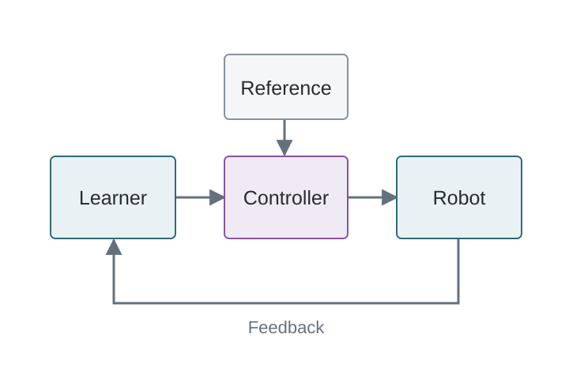
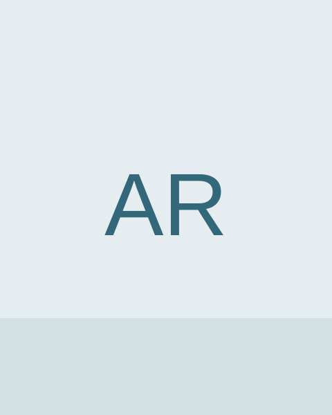
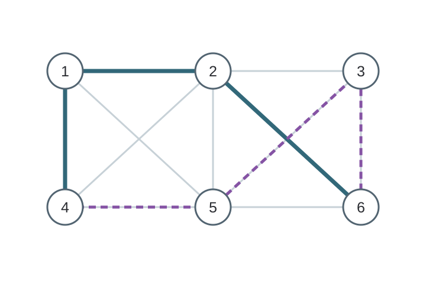
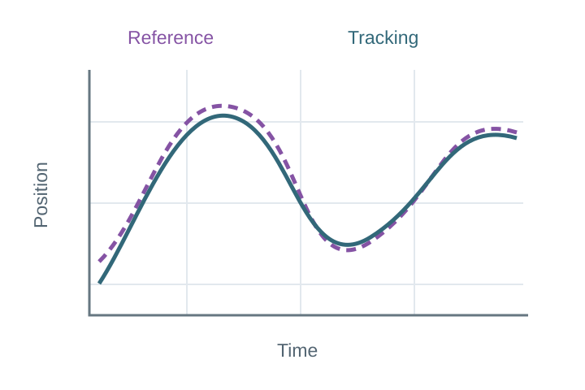

Learning Adaptive Assistance from Interaction
Example Robotics Conference,
A learning-based approach to adapting robot assistance from feedback during physical interaction.

Ph.D. Candidate
Electrical and Computer Engineering
Example University
I am a Ph.D. candidate in Electrical and Computer Engineering at Example University, advised by Prof. Taylor Mentor in the Learning and Robotics Lab.
I develop learning-enabled systems that adapt to uncertain environments while remaining reliable and efficient.
My research lies at the intersection of control theory and machine learning, with applications to robotics and networked systems.

Example Robotics Conference,
A learning-based approach to adapting robot assistance from feedback during physical interaction.

Example Journal of Networked Systems, 12(3):101-114,
Distributed feedback policies for coordinating networked systems under changing communication conditions.

Example Control Conference,
A feedback-control study of reliable trajectory following in the presence of disturbances.